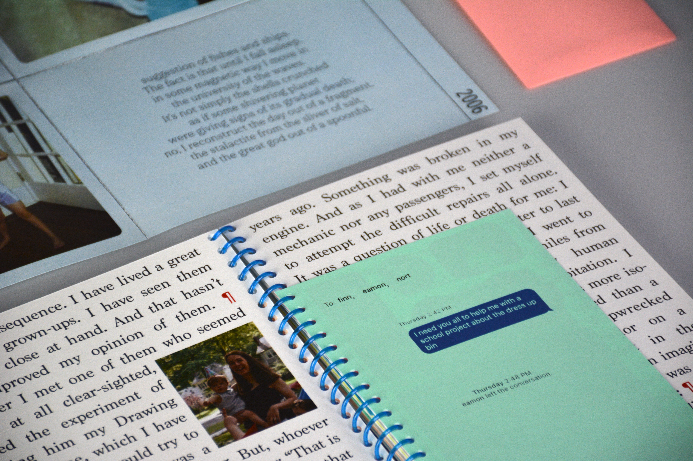
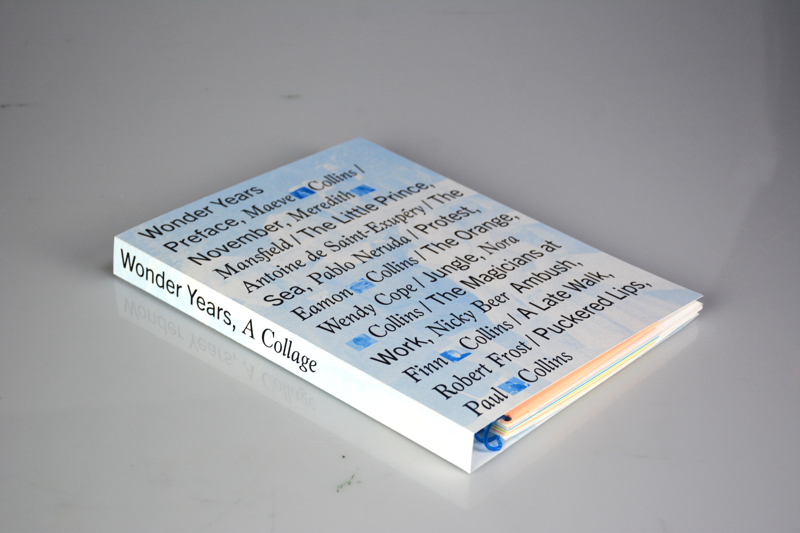
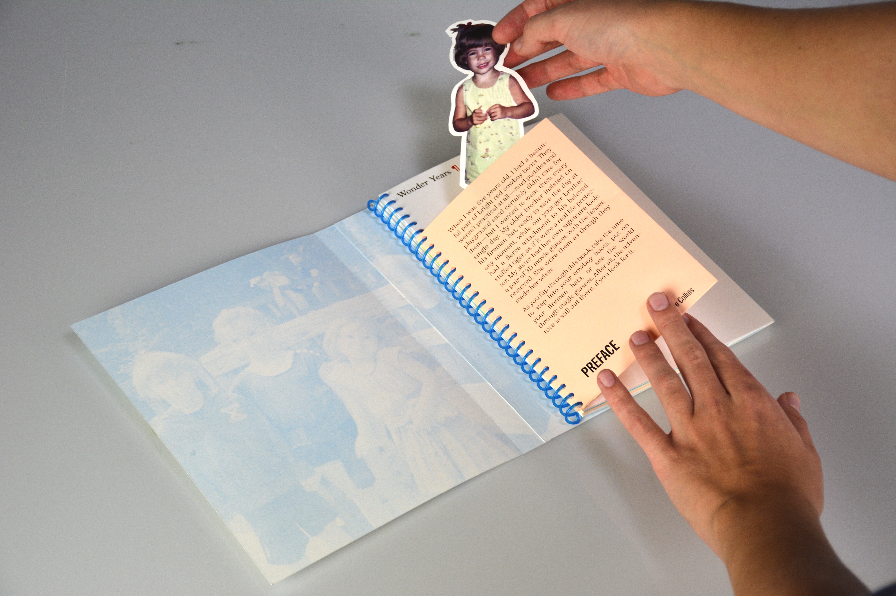
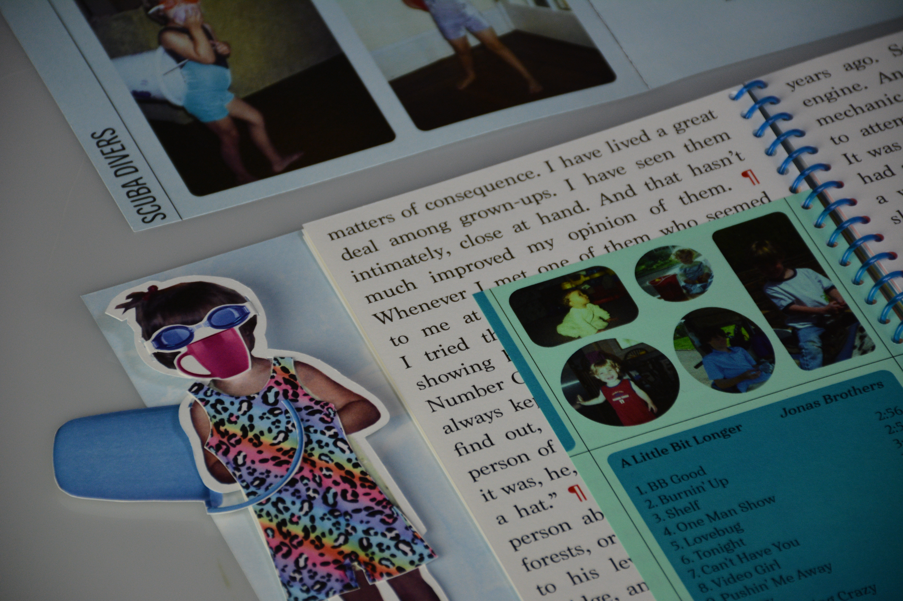
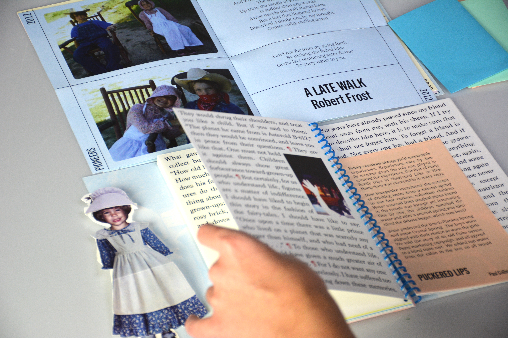
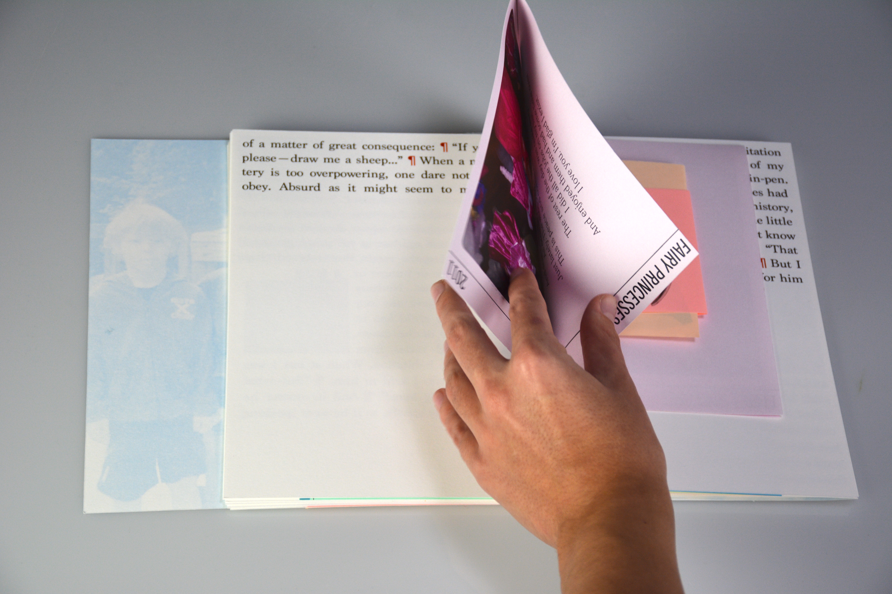
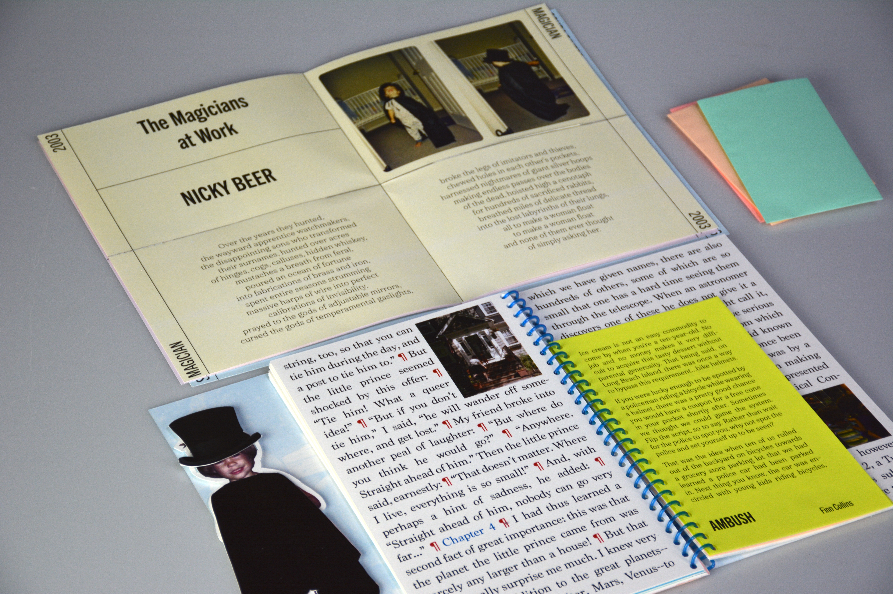

WONDER
YEARS
YEARS

When I was five years old, I had a beautiful pair of bright red cowboy boots. They weren’t practical at all — mud puddles and playground sand certainly didn’t care for them — but I wanted to wear them every single day. My older brother insisted on his fireman hat, ready to save the day at any moment, while our younger brother had a fierce attachment to his beloved stuffed tiger, as if it were a real life protector. My sister had her own signature look: a pair of 3D movie glasses with the lenses removed. She wore them as though they made her wiser.
As you flip through this book, take the time to step into your cowboy boots, put on your fireman hats, or see the world through magic glasses. After all, the adventure is still out there, if you look for it. This book focuses on my childhood memories of playing dress-up with my siblings. The main text is Antoine de Saint-Exupery’s “The Little Prince,” punctuated by stories written by each of my family members.
As you flip through this book, take the time to step into your cowboy boots, put on your fireman hats, or see the world through magic glasses. After all, the adventure is still out there, if you look for it. This book focuses on my childhood memories of playing dress-up with my siblings. The main text is Antoine de Saint-Exupery’s “The Little Prince,” punctuated by stories written by each of my family members.
All grown-ups were once children... but only few of them remember it.





